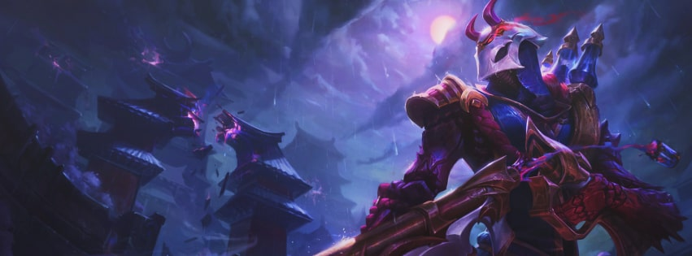
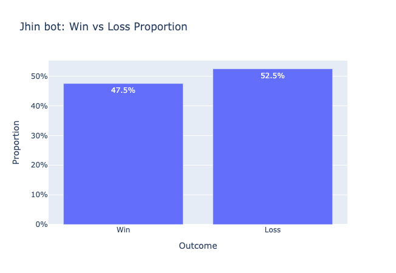
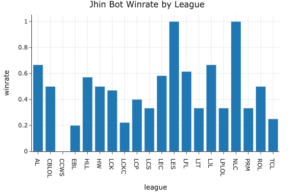
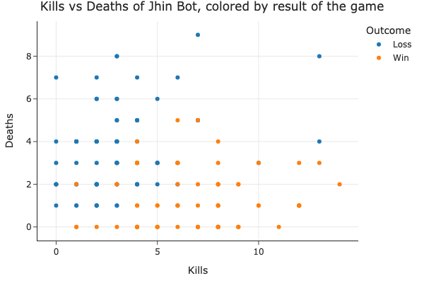
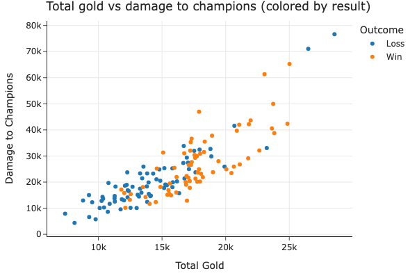
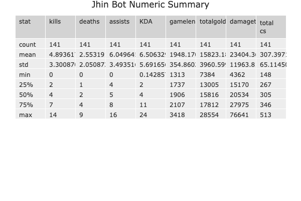

Statistical analysis of Jhin in the bot lane, 2026 LoL esports (OraclesElixir)
League of Legends (LoL) is a popular multiplayer online battle arena (MOBA) game developed by Riot Games. With millions of players worldwide, it has become one of the most influential and widely played esports in the gaming industry. The dataset we work with is professional match data from Oracle's Elixir, recording outcomes and statistics from LoL esports matches in 2026.
This dataset captures key gameplay statistics and outcomes from a collection of LoL matches, offering a rich source of information for understanding player performance, team dynamics, and match results. It includes features such as individual player stats (kills, deaths, gold, damage, creep score), draft and context (champion, position, league, side), and match-level information such as game length and result. We restrict our analysis to 2026 data only: the game meta (viable champions, item builds, and strategies) changes frequently across patches and seasons, and focusing on a single year allows us to rely on our knowledge of the current meta when interpreting results.
Champion choice in a given role holds significant weight and can shape the trajectory of a match. The bot lane or ADC(Attack Damage Carry) role is central to late-game scaling. Jhin, as a marksman often played in the bot position, is my personal favorite champion and I chose to analyze him for this project.
The central question we are interested in is: is Jhin, when played in the bot lane, more likely to win or lose any given match? We use data analysis techniques to explore the relationship between Jhin bot picks and other in-game statistics, including individual performance (kills, deaths, gold, damage), game context (league, side, game length), and ultimately match outcome. We then build a prediction model to predict win or loss for Jhin bot games. This predictive model can help clarify which factors are associated with Jhin bot success and support a data-informed view of his effectiveness in professional play.
Dataset summary. The 2026 Oracle's Elixir file has 19,284 rows in total. After removing team-level rows (position == 'team'), there are 16,070 player-level rows. For Jhin-specific analysis we further restrict to rows where champion == 'Jhin', position == 'bot', and datacompleteness == 'complete', yielding 141 rows (jhin_df). The columns most relevant to our question and their descriptions are:
result: Match outcome for the player's team (1 = win, 0 = loss). This is our target variable for prediction.champion: Champion played (e.g. Jhin). Used to filter to Jhin bot games.position: In-game role (e.g. top, jng, mid, bot). We keep only bot for our analysis sample.league: Professional league or tournament (e.g. LEC, LCK). Context for where the match was played.side: Team side (Blue or Red). Draft and map context.kills: Number of enemy champions the player killed.deaths: Number of times the player was killed.totalgold: Total gold earned by the player by the end of the game.damagetochampions: Total damage dealt to enemy champions.gamelength: Duration of the match in seconds. Same for all players in a given game.total cs: Total creep score (minions and monsters killed). Measures farming and resource income.The data come from OraclesElixir: one row per player per game, with match metadata (league, split, date, patch), draft (champion, side), and in-game stats (kills, deaths, gold, damage, etc.). We clean as follows.
champion == 'Jhin', position == 'bot', and datacompleteness == 'complete'. This gives us Jhin bot games with full stats for our EDA and hypothesis tests.pick1 to pick5, firstdragon, towers, heralds, barons, etc.) that duplicate information or are not needed at player level, and ID columns (url, playerid, teamid, participantid, position, champion) to avoid redundancy after filtering.KDA as (kills + assists) / deaths (with 0 deaths replaced by 1 to avoid division by zero).reset_index(drop=True) after drops so the cleaned DataFrame has a clean integer index.These steps ensure we work with a player-level, Jhin-bot-only dataset with complete records and a consistent index for plotting and aggregation.
Head of cleaned DataFrame (jhin_df):
First five rows of jhin_df after cleaning.
We look at the distribution of a single variable at a time (univariate). Below is the distribution of game outcome (Win/Loss) for Jhin bot.
Distribution of game outcome for Jhin bot: proportion of wins vs losses.
We look at pairs of columns to identify associations (bivariate). Below is the relationship between kills and deaths, colored by outcome.
Kills vs deaths for Jhin bot, colored by Win/Loss.
We group by league and side (Blue/Red) and aggregate win rate (result mean) for Jhin bot games.
This table shows that Jhin's win rate varies substantially across leagues and sides, with Blue side generally performing better in most leagues, though small sample sizes per cell mean these differences may not be reliable.
Jhin bot win rate by league and side.

Jhin bot: Win vs loss proportion

Jhin bot win rate by league

Kills vs deaths (colored by game outcome)

Total gold vs damage to champions

Numeric summary (Jhin bot)
MNAR analysis. We believe the ban columns (ban1–ban5) contain values that are MNAR (missing not at random) in certain rows. While some games are missing all five bans—which can be explained by a league-level reporting gap visible on league and date (MAR)—a separate set of 25 team-rows have partial ban missingness: some ban slots are recorded while others in the same game are null. Because these rows share the same league, datacompleteness, and gameid as the non-missing bans in their game, no observed column can explain why one specific slot is missing while its neighbors are present. One explanation is that the missing entry corresponds to a champion the data provider’s ingestion system could not map at the time of recording (for example, a very recently released or reworked champion whose name or ID had not yet been added to the provider’s champion database). If that is so, the missingness depends on the value itself (which champion was banned), which is MNAR by definition.
To make this MAR, we would need an additional column such as champion_database_version or patch_champion_coverage that records whether the provider’s system could handle every champion at the time each game was ingested.
Permutation tests. We assess whether the missingness of goldat25 (gold at 25 minutes) is related to other columns. Test 1, Missingness and datacompleteness: We test whether the distribution of datacompleteness differs when goldat25 is missing vs when it is observed. The test statistic is the total variation distance (TVD). We run 1,000 permutations. Test 2, Missingness and result: We test whether mean result (win rate) differs when goldat25 is missing vs observed; test statistic is the absolute difference in mean result.
Results and interpretation. Test 1, observed TVD = 0.6557, p-value = 0.0010; Test 2, observed |diff in mean result| = 0.000000, p-value = 1.0000 (α = 0.05). The p-value for Test 1 is small, so we reject the null and conclude the data are consistent with goldat25 missingness being related to datacompleteness. The p-value for Test 2 is large, so we do not have evidence that missingness is related to win/loss.
Distribution of datacompleteness by goldat25 missingness.
Permutation distribution of TVD with observed TVD (0.656) marked (off scale to the right).
We test whether the proportion of matches Jhin (bot) wins differs from 0.5. Null hypothesis (H₀): The proportion of matches Jhin wins is 0.5. Alternative hypothesis (H₁): The proportion of matches Jhin wins is not 0.5. We use a binomial test (two-sided); test statistic is the number of wins; significance level α = 0.05.
Results. Observed proportion of Jhin wins: 0.4752 (67 wins out of 141 games). p-value = 0.6135. At α = 0.05 we fail to reject H₀. The data are consistent with Jhin's true win proportion being 0.5.
Jhin bot: Win vs loss proportion (hypothesis test).
This is a binary classification: there are exactly two labels (win vs loss). We are not doing multiclass classification
Response variable. The variable we predict is result: 1 if the Jhin bot player’s team won and 0 if they lost. We chose it because we care whether Jhin bot games tend to win or lose and which measurable factors align with that outcome; match result is the clearest indicator of success.
Time of prediction and features. We only use information that would be known at the time we pretend to predict. We set that time to match completion (after the Nexus falls). Oracle’s Elixir records end-of-game player totals and result on the same row. Predictors available then include league and side (match-fixed), and aggregates kills, deaths, totalgold, damagetochampions, gamelength, and total cs. We do not use future games or out-of-row artifacts. This framing is retrospective (not pre-game forecasting).
Predictor types (Step 6 baseline). league is nominal (unordered tournament labels). side is nominal (Blue vs Red; two categories without a natural order for modeling). kills, deaths, totalgold, and damagetochampions are quantitative (counts and amounts). We do not use an ordinal predictor in the baseline (nothing with a built-in ranking like low/med/high tier).
Evaluation metric. Our primary metric is test-set accuracy. It is interpretable here because wins and losses are in the same ballpark (~47.5% vs ~52.5%), so neither class dominates. Why not only F1? F1 matters more under strong imbalance or asymmetric costs of false positives vs false negatives. We still report precision for predicted Win in the fairness section. We do not use RMSE because the outcome is categorical.
Split. 80% train / 20% test, random_state=42.
We fit a logistic regression pipeline on jhin_df (Jhin bot, complete games), post-game. Preprocessing: StandardScaler on the quantitative columns; OneHotEncoder(handle_unknown='ignore') on the nominal columns.
Performance. Train accuracy ~87.5%, test accuracy ~72.4%. Train is higher than test, which is common with a small sample and can indicate overfitting or high variance; n = 141 keeps estimates noisy.
Is the baseline “good”? Compare to trivial rules: always predict the majority class (Loss, ~52.5% of games) → ~52.5% accuracy; coin-flip → ~50%. The baseline’s ~72.4% test accuracy is well above both, so it is useful: league, side, and box-score stats carry signal about wins. It is not perfect (wrong on roughly one in four games), and because predictors are post-game, this is associative (“what co-occurs with wins”) rather than a true pre-match forecast.
We add two features, both quantitative: gamelength (seconds) and total cs (farm). We include gamelength because match length shapes how wins and losses play out (e.g. scaling, comebacks). We include total cs because it tracks farm and impact. total cs is often right-skewed, so we apply QuantileTransformer after SimpleImputer (median) if needed.
Our final model uses the same Jhin-only data and the same train/test split as the baseline (test_size=0.2, random_state=42) so that test accuracy is directly comparable. We keep logistic regression and encode gamelength with StandardScaler so it is on a similar scale as the other numeric features like kills and gold. We also keep total cs with SimpleImputer then QuantileTransformer. For our hyperparameter tuning we use GridSearchCV with 5-fold CV on the training set only. We tune C (inverse regularization strength) and max_iter because smaller C increases regularization and helps with overfitting on small samples. With refit=True, the best estimator is trained on the entire training set before we evaluate on the held-out test set. The best parameters selected were C=0.1 and max_iter=500.
Train accuracy is approximately 90.2% and test accuracy is approximately 82.8%. The final model improves on the baseline’s test accuracy, so the added features and tuning are helpful. The gap between train and test suggests some overfitting. This is common with a small Jhin-only sample (~141 rows).
Step 7 is evaluated with the same primary metric test-set accuracy which is appropriate because win/loss rates are almost 50/50, so that metric reflects overall performance and the ~72.4% → ~82.8% gain is an improvement over the baseline on accuracy.
We use significance level α = 0.05 for this permutation test.
We ask whether the final classifier (Step 7) is less reliable for Red-side than Blue-side Jhin bot games when we score precision for predicting Win among games where the model predicts a win, what fraction actually won on the held-out test set only. H₀: precision for Win is the same for Red and Blue up to chance. H₁: precision for Win is lower on Red than on Blue. We run a permutation test (1,000 shuffles of side labels, fixed counts of Red/Blue rows) on the test predictions and compare the observed gap to the null distribution. We reject H₀ in favor of this one-sided H₁ only if the p-value is smaller than α.
Results (same split as Step 7, random_state=42). Test set size 29 (20 Red, 9 Blue). Observed precision (Win | predicted Win): Red 1.00, Blue 0.33, so Red is not worse than Blue on this metric. One-sided p-value (evidence Red worse) ≈ 0.93. At α = 0.05, p > α, so we do not reject H₀. Because the test set and subgroups are small, subgroup precision and the p-value are noisy conclusions are not definitive.
Permutation distribution of precision(Red) minus precision(Blue) for Win. The dashed line = observed statistic.